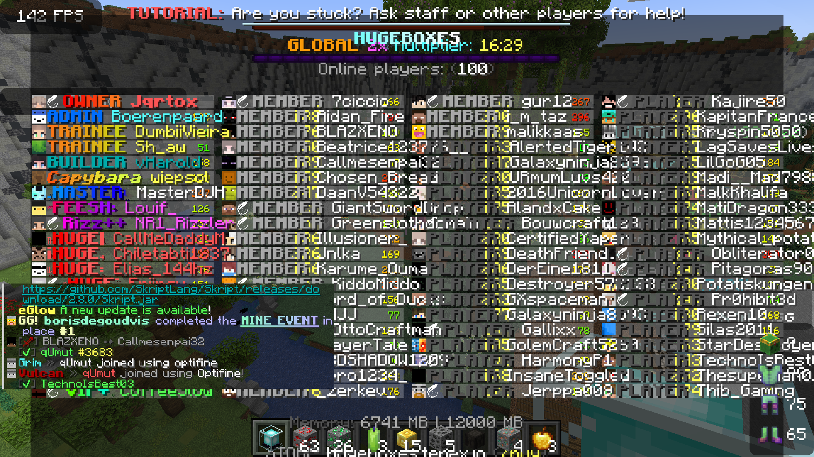
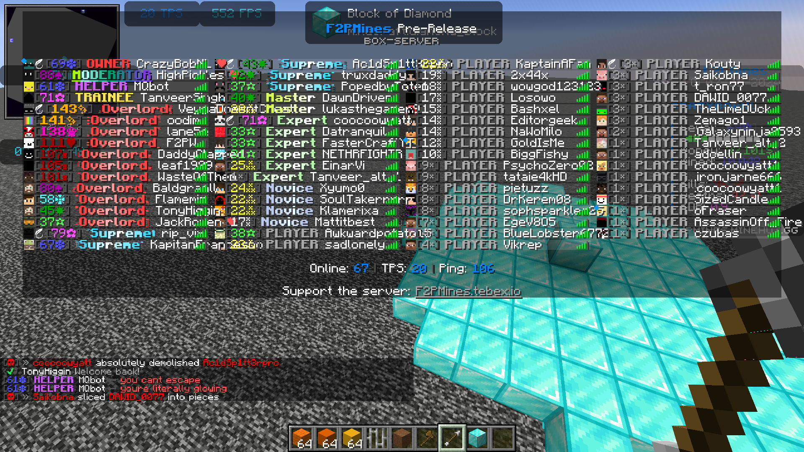
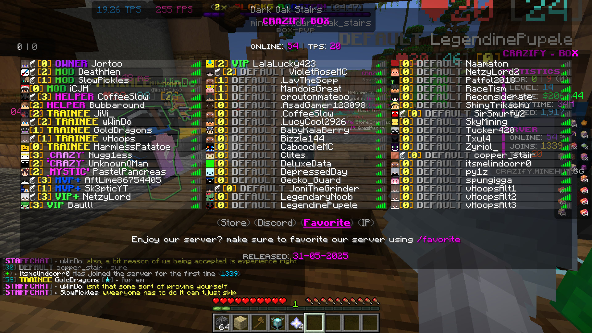
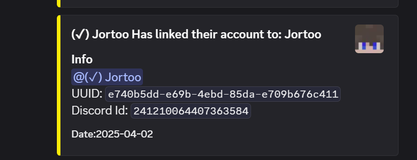
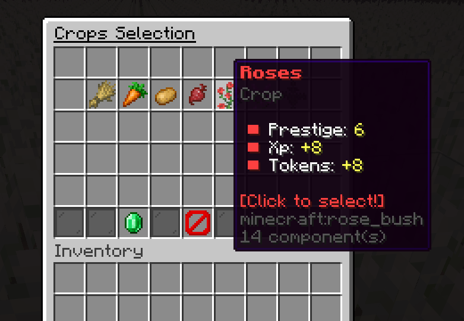
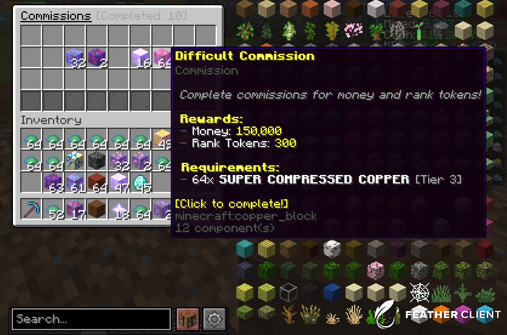

Project Gallery
An overview of my custom Skripts (And plugins) and servers.
Hugeboxes
With a peak of 100+ CCU players, this servers is one of my most succesful server. This server reached around 40,000 unique players across 3 different seasons, with season 2 being our most succesful. This server generated around 9,000$ in a span of 6 months. Hugeboxes ran mostly on custom skripts.

F2PMines S1
This server was a passion project and did not generate alot of revenue, this because everything was free to play. With this server being free to play it generated alot of players with peaks of 70-80 ccu players and 20,000+ different players accross 4 months of it being up. Players loved this server which is why I am working on season 2. This server ran on alot of cool custom skripts with alot of custom features

Crazify
Crazify was my last released server which I discontinued, because I started college. This server generated ~1,500$ in 1 month with 10,000 unique players before it shut down. This server was one of my best yet with almost everything running on my own custom skripts and some custom plugins I created such as discord bot and linking, a claim system and a core plugin.

Discord Linker
A plugin that bridges Minecraft with Discord having a chat bridge, link system, and log systems

Client Side Farming
A farming mechanic in one of my unreleased server where the player can farm with it being client-sided, so different for everyone.

Commissions
A mechanic in my box server that let's a player complete random commissions by mining ores and receiving rewards for them.
